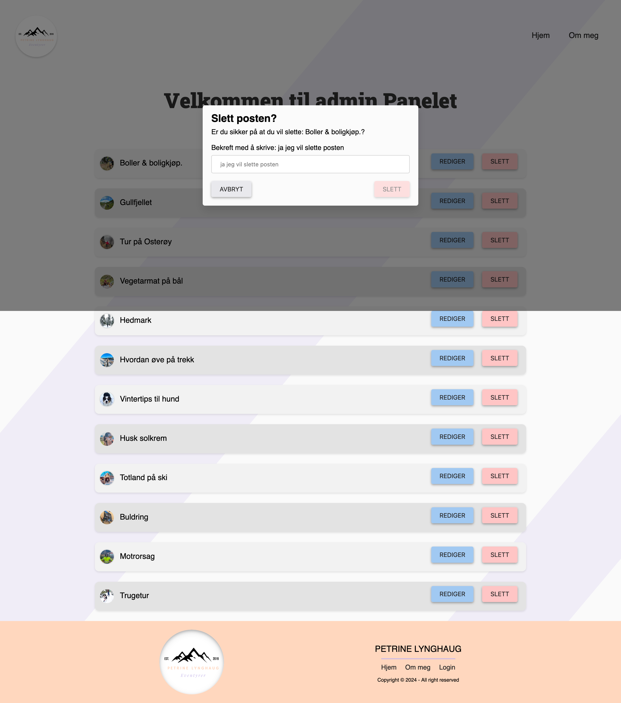
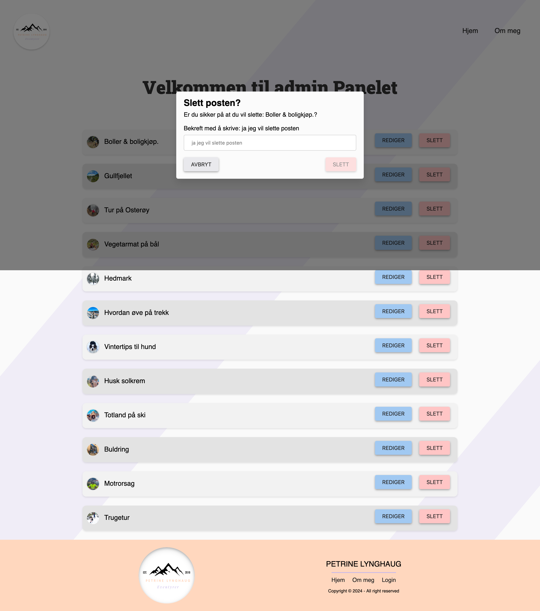

Prosjekter
Prosjekt 1: Interaktiv nettside i HTML og CSS
Community-Science-Museum er et museum rettet mot barn og unge. Oppgaven var å lage en interaktiv nettside ved hjelp av HTML og CSS. For å gjøre nettsiden mer livlig og engasjerende for unge brukere, benyttet jeg SVG-grafikk og en mer dynamisk navigasjonsmeny.
Denne prosessen var svært læringsrik med tanke på design, og ga meg frihet til å utforske et mer lekent og fargerikt uttrykk. Jeg valgte å inkludere en bølgete footer for å tilføre nettsiden en følelse av liv og bevegelse.
Footeren og SVG-elementene fikk svært positive tilbakemeldinger fra målgruppen. For å sikre at nettsiden var brukervennlig, gjennomførte jeg brukertester med barn i aldersgruppen 10-15 år. Tilbakemeldingene var overveldende positive; de fant nettsiden enkel å navigere og likte det lekne designet. Dette prosjektet demonstrerer min evne til å kombinere tekniske ferdigheter med kreativt design for å skape engasjerende digitale opplevelser.


Prosjekt 2: Wordpress-prosjekt
Vi hadde et samarbeidsfag som førte til at Erland Heen Halvorsen og jeg startet en studentbedrift. Vi skulle utvikle et WordPress-prosjekt for hytteutleie, og vi hadde eksterne kunder som vi jobbet for.
WordPress-prosjektet ble en utfordring for oss, da ingen av oss hadde erfaring med WP tidligere, noe som var hovedgrunnen til at vi valgte det. Vi hadde morgenmøter hver dag hvor vi fordelt oppgaver og gikk gjennom eventuelle restoppgaver fra dagen før, noe som fungerte godt for oss.
Det vi fokuserte på i denne oppgaven var å vise frem stedets naturskjønnhet og potensiale for opplevelser. Vi ønsket også å inkludere en del av Otterskreds historie. Noe av det viktiste var å ha muligheter for å skifte språk til både Tysk og Engelsk. dette føler jeg vi løste bra.


Prosjekt 3: Eksamen
Til eksamensoppgaven skulle vi lage en blogg. Det var et valgfritt tema, og jeg valgte friluftsliv. Jeg baserte min oppgave på å lære meg komponentbasert JavaScript siden jeg ønsket en utfordring. Det var både veldig nyttig og til tider utfordrende.
Det jeg fant spesielt interessant med denne oppgaven var at den inkluderte en innlogging, mulighet til å lage nye blogginnlegg, slette og redigere poster. Vi fikk utdelt et API som kun tok URL som parameter, noe som til tider var litt utfordrende. Vi skulle også optimalisere bilder ved å lagre dem et annet sted for deretter å hente dem ut igjen.
Jeg valgte å fokusere mest på mine komponenter, men i tillegg inkluderte jeg REGEX-koder. Jeg valgte også å fokusere på sikkerheten rundt bildene og implementerte ekstra funksjonaliteter, slik som muligheten til å hoppe fra post til post for å lese flere poster samtidig.
 
